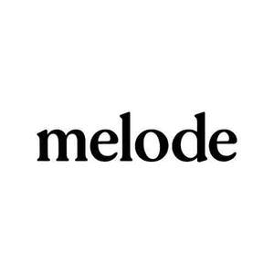

Trade Mark Journal No.2025/033 15 August 2025
UK00004209969 27 May 2025 (9,16,25,35,38,41)
Mark 1
melode
Mark 2

- Class 9
- Downloadable music and video files; downloadable audio-visual recordings; digital artwork; downloadable sound recordings and visual media; Audio and video recordings, Downloadable multimedia content featuring music and artistic visuals, Mobile applications for streaming music and visuals ; Downloadable and streaming audiovisual recordings featuring music, video, moving pictures, and narrated stories; Visual storytelling through visual media like images, videos, illustrations, and photo narratives; Music recordings; Downloadable music sound recordings; Downloadable digital music; Downloadable video recordings featuring music; Digital music downloadable from the Internet; Musical sound recordings; Series of musical sound recordings; Downloadable video recordings; Downloadable digital photos; Musical video recordings; Downloadable videos; Downloadable virtual works of art; Downloadable and streaming music recordings accompanied by curated visual artwork and themed storytelling.
- Class 16
- Printed books and booklets featuring visual art and stories; Story-based art prints; Printed artwork; physical prints, Art prints, Posters, postcards, Printed visual media, Paper-based visual compositions, Printed illustrations.
- Class 25
- Clothing; printed artwork, Clothing; T-shirts; hoodies, Printed artwork on apparel, merchandise featuring artistic branding or musical identity.
- Class 35
- Online retail services in connection with the sale of clothing, branded art prints, stationery ; Retail services in connection with the sale of artist-designed home posters, and printed materials.’.
- Class 38
- Streaming of audio, video, and multimedia content; transmission of sound and video recordings via the internet; digital broadcasting services. ; Streaming of audio, visual and audiovisual material via a global computer network; Transmission of videos, movies, pictures, images, text, photos, games, user-generated content, audio content, and information via the Internet; Broadcasting of audiovisual and multimedia content via the Internet; Streaming audio and video material on the Internet.
- Class 41
- Music composition, Entertainment services in the nature of music composition, music production, visual storytelling and audio-visual storytelling; providing music and artwork via online platforms; curation and presentation of themed visual music series ; Providing digital sound recordings, not downloadable, from the internet; Providing online music, not downloadable; Audio, video and multimedia production, and photography; Production of video and audio recordings; Production of sound and music recordings; Production of sound and video recordings; Providing online videos, not downloadable; Audio and video production, and photography.
Elizabeth Smart